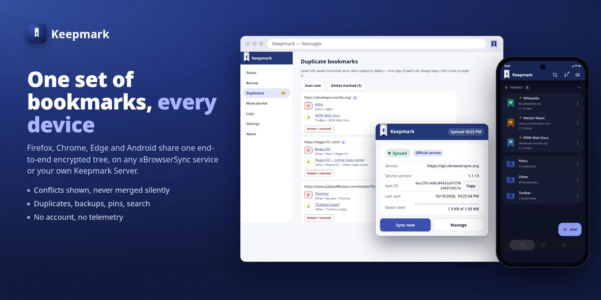
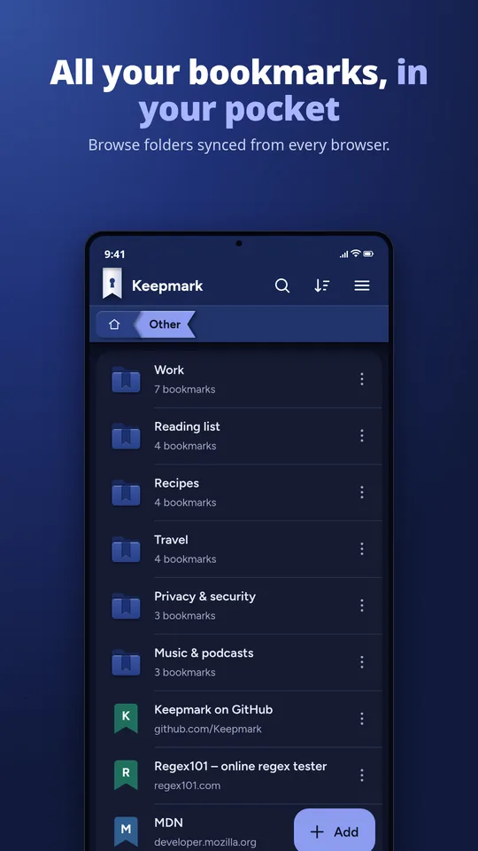
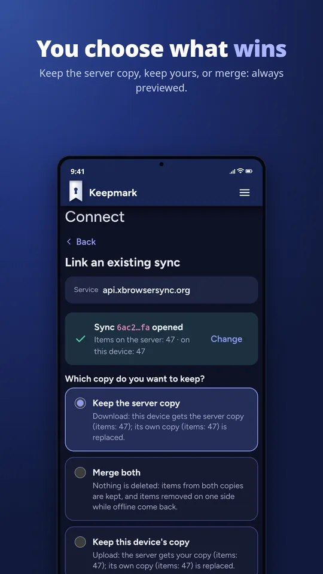
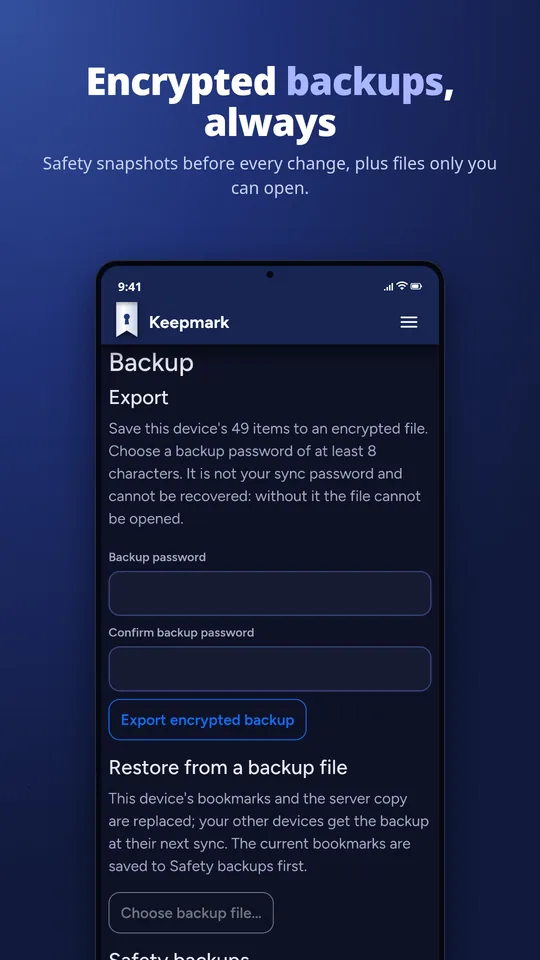
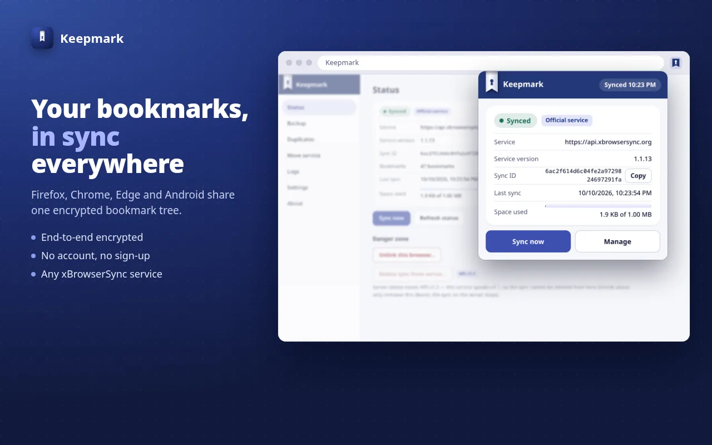
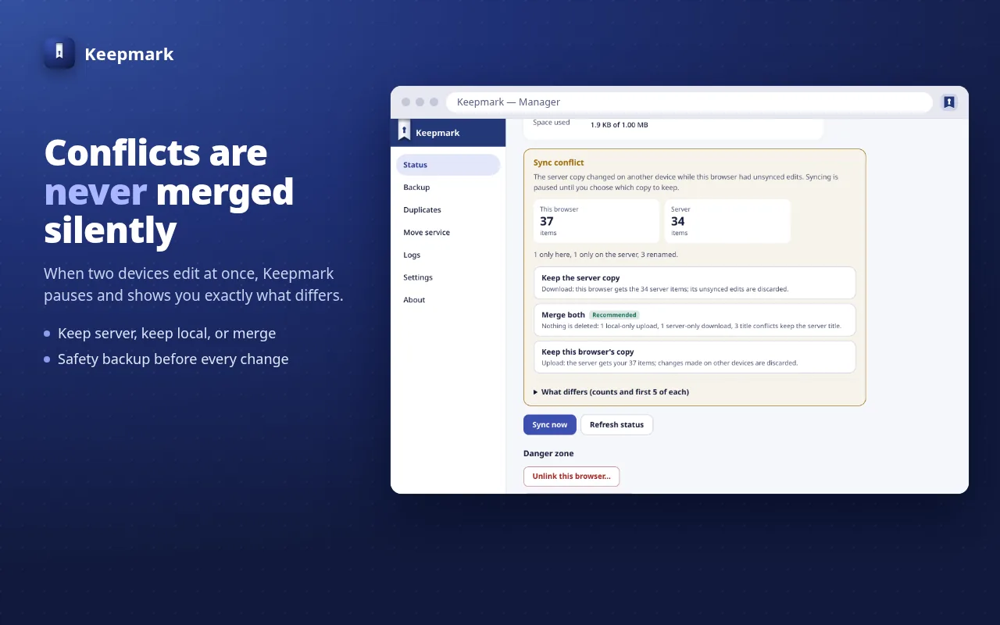
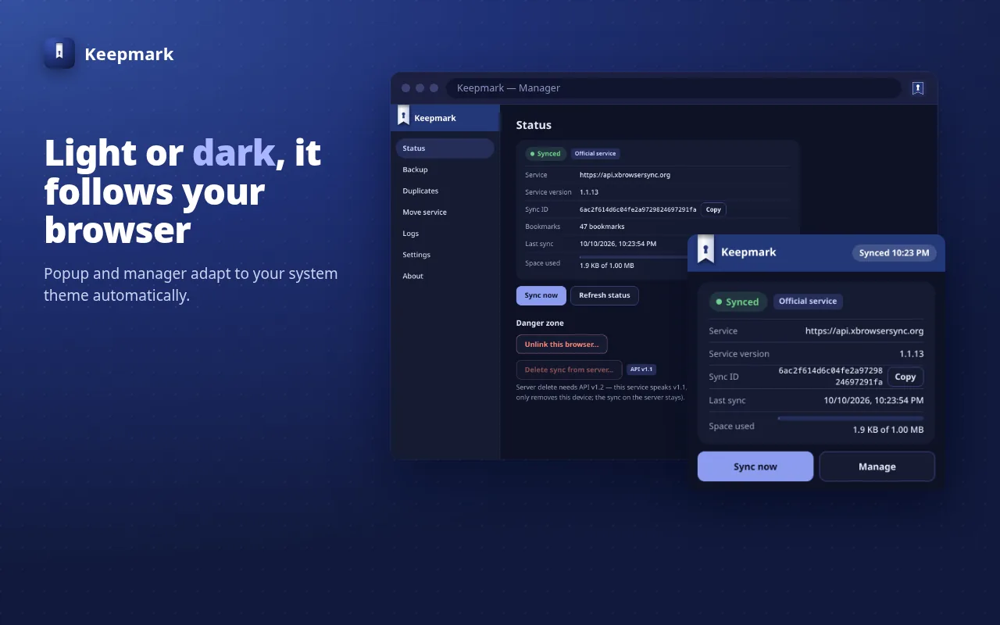

Keepmark keeps the same bookmarks on all your browsers and your Android phone. Everything is encrypted on your device before it leaves: the server stores only ciphertext, and your password never leaves the device.
Free · No account · No telemetry · 9 languages

Already using xBrowserSync? Keepmark opens your existing sync on any xBrowserSync service. Nothing to migrate.
Built for people who want their bookmarks private and never want to lose one by surprise.
PBKDF2-SHA256 and AES-GCM on your device. The service that stores your sync sees only ciphertext.
Works with the official service, community hosts or your own server, and with the official xBrowserSync apps, both ways.
When two devices disagree, you choose: take remote, upload local, or merge, with a preview of the counts first.
An encrypted snapshot is taken automatically before every destructive step. Restore it in one tap.
Find links saved more than once and remove them in bulk. The last copy of each link is always kept.
Move your bookmarks to another server, into a new or existing sync, and change your sync password.
A native app for Android 10 and later, built around privacy.



An extension for Chrome, Edge and Brave (Manifest V3) and for Firefox.



A drop-in replacement for the xBrowserSync API. Official xBrowserSync apps and Keepmark apps work unchanged. Optional: Keepmark works on any xBrowserSync service.
Same endpoints, error codes and MongoDB layout, byte-identical v1.1 responses. No user migration.
Every conditional write is an atomic compare-and-swap: two clients pushing at once can no longer silently lose a sync.
Docker Compose with MongoDB and rolling backups, healthchecks, throttling and sync IDs truncated in every log line.
docker pull keepmark/keepmark-api
· Docker Hub
· Source and docs
Install Keepmark, then create a new sync or link the one you already use with xBrowserSync.
Install from the Chrome Web Store. Works in every Chromium-based browser.
Add to ChromeInstall from Firefox Add-ons. The signed .xpi is also in the latest release (latest: 0.1.22).
Please keep the app installed for at least 14 days: it helps Keepmark reach the public Play Store.
Become a testerRun Keepmark Server with Docker Compose, then point any Keepmark or xBrowserSync app at it.
Setup guide